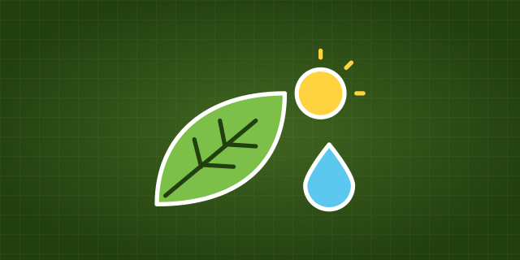

AP® Environmental Science · free to start May 2027 exam
AP® EnvironmentalScience
every calculation, with units
Each topic taught from scratch for the May 2027 exam, then practice that checks your setup, your answer and its units, and answers specific enough to score.
Pick up where you left off
The path through AP® Environmental Science
Every lesson, skill, practice set and unit test, in course order.
01Unit 1 · 6 to 8% of the examThe Living World: Ecosystems11 topics
02Unit 2 · 6 to 8% of the examThe Living World: Biodiversity7 topics
03Unit 3 · 10 to 15% of the examPopulations9 topics
04Unit 4 · 10 to 15% of the examEarth Systems and Resources9 topics
05Unit 5 · 10 to 15% of the examLand and Water Use17 topics
06Unit 6 · 10 to 15% of the examEnergy Resources and Consumption13 topics
07Unit 7 · 7 to 10% of the examAtmospheric Pollution8 topics
08Unit 8 · 7 to 10% of the examAquatic and Terrestrial Pollution15 topics
09Unit 9 · 15 to 20% of the examGlobal Change10 topics
jump anywhere, everything you finish stays done
Finishing a lesson or marking a stop done moves the path; practice answers do not. Your path’s answers are saved on this device; what you finish counts everywhere you are logged in.
Field Observer
Level 1 · 0 XP · 0 / 100 XP to Level 2. One level and one streak count across every LevlPrep course.
Introduction to Ecosystems
Unit 1 · The Living World: Ecosystems. Units 1 and 2 lessons and every notes page are free.
Start the first lessonMissed questions come back
Anything you miss returns when you are about to forget it, not on a fixed date.
Open review →A little every day
Questions, cards and tool steps count toward a daily goal and a streak shared across every LevlPrep subject. 15 practice questions a day are free.
Practice now →Tools

AP® Environmental Science
$17.50$25school year
| What you get | Free$0 | Premium$17.50$25 |
|---|---|---|
| Notes, glossary, flashcards and unit sheets | Included | Included |
| The formulas to memorize, explained | Included | Included |
| Interactive lessons | Units 1 and 2, and math lessons | Every unit |
| Practice and review questions | 15 a day | Unlimited |
| Trainers | Three | Every trainer |
| Free-response questions and unit tests | Not included | Included |
| Full practice exams | One | Every one |
| Cram kit study plan | Outline | Fitted to your weakest units |
| Mastery dashboard | Not included | By unit, topic and science practice |
| Your progress, XP, streak and weak topics | Included | Included |
One pass, valid through 30 June 2027 whenever you buy it. Founding price · $25 from February 1, 2027
Full refund within 7 days · Never renews · Secure checkout by Polar
For comparison: Fiveable is $79 a year (checked October 2026). Source: Fiveable.
Questions
Is this course free?
What’s on the exam?
Has it been reviewed?
Is LevlPrep affiliated with the College Board?
More questions, about who makes LevlPrep and how the questions are written, are answered on About.